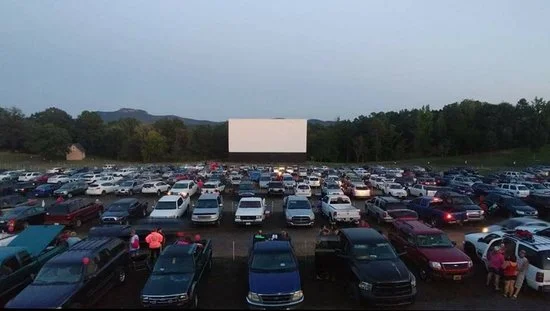
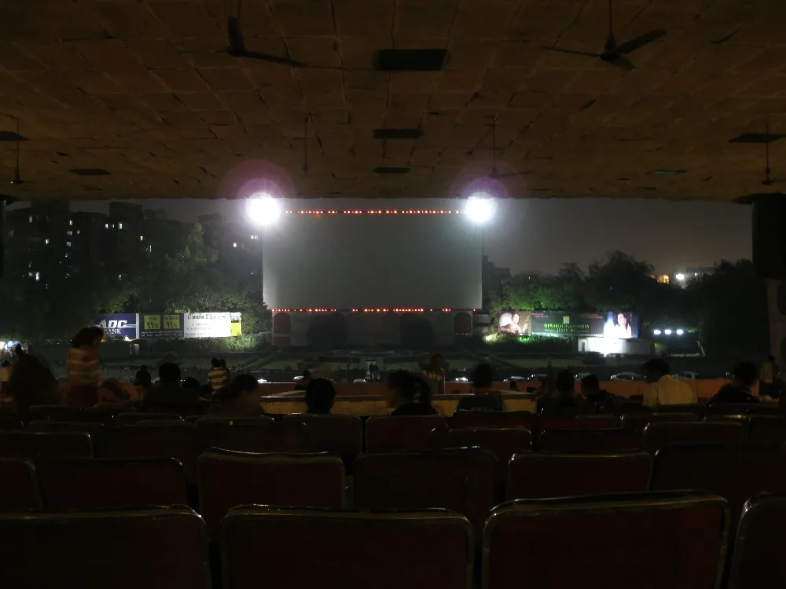

▲ 사진은 해외 자동차극장. 입장 대기 줄이 만들어지는 구조는 국내도 같다 ⓒ Wikimedia Commons
1. 서울에서는 사라졌다
서울 잠실 자동차극장이 문을 닫으면서, 서울 안에 자동차극장은 남아 있지 않습니다.
이유는 땅값입니다. 자동차극장은 수백 대를 세울 평지가 있어야 하고, 그 땅을 밤에만 씁니다. 도심에서 이 계산이 맞기는 어렵습니다.
그래서 지금 자동차극장에 가는 일은 그 자체로 드라이브가 됐습니다. 서울에서 출발하면 왕복 두 시간 안팎을 운전해야 하는 거리에 있습니다.
2. 남아 있는 곳
| 이름 | 위치 | 특징 |
|---|---|---|
| 자유로 자동차극장 | 파주시 탄현면 낙하리 | 3,000평 규모, 2022년 12월 재단장, 굿즈샵·팝업스토어·스낵바 |
| 장흥 자동차극장 | 양주시 장흥면 권율로 120 | 규모가 크고 자리가 넉넉함, 스낵 판매 |
| CGV Drive in 용인 | 용인 (한국민속촌) | 민속촌과 묶어 일정 구성 가능 |
자유로 자동차극장은 성격이 조금 다릅니다. 2022년 12월에 '자동차 복합 문화 공간'으로 새로 단장하면서 고화질 디지털 영사와 함께 자동차 용품 굿즈샵, 팝업스토어를 넣었습니다. 영화만 보고 나오는 곳이 아니라는 뜻입니다.
장흥 자동차극장은 넉넉한 자리가 장점입니다. 차 사이 간격이 좁으면 시야가 가리고 문을 열기도 불편한데, 이 부분에서 평이 좋은 편입니다.

▲ 상영이 시작되기 전의 자동차극장. 앞차의 차고가 곧 내 시야이므로, 자리 배정 방식은 미리 확인해 두는 편이 낫다 ⓒ 경기일보

▲ 사진은 해외 자동차극장. 스크린과 주차 구획의 관계가 자리 선택을 좌우한다 ⓒ Wikimedia Commons
3. 자동차극장의 규칙 세 가지
첫째, 소리는 라디오로 받습니다. 현장에서 안내하는 FM 주파수를 맞추면 차 안 스피커로 소리가 나옵니다. 즉 라디오가 되는 차여야 합니다. 최근 일부 전기차는 FM 수신을 지원하지 않는 경우가 있어 미리 확인하는 편이 좋습니다.
둘째, 전조등은 꺼야 합니다. 상영 중 전조등이 켜지면 앞차와 스크린에 빛이 그대로 들어갑니다. 문제는 요즘 차 대부분이 오토 라이트라 시동만 켜면 자동으로 점등된다는 점입니다. 라이트 스위치를 수동 OFF로 바꿔 두어야 합니다.
셋째, 브레이크등도 주의 대상입니다. 자동변속기 차량은 P에 두고 발을 떼야 합니다. 브레이크를 밟은 채로 있으면 뒤차 시야에 붉은 빛이 계속 들어갑니다.
4. 시동을 끄면 배터리, 켜면 매연
자동차극장에서 가장 자주 생기는 사고는 방전입니다. 영화 한 편은 두 시간 안팎입니다. 시동을 끈 채 오디오와 실내등을 계속 쓰면 배터리가 버티지 못하는 경우가 생깁니다.
특히 위험한 조합이 있습니다. 배터리 교체 시기가 지난 차, 블랙박스 상시 녹화 중인 차, 그리고 기온이 낮은 날입니다. 세 조건이 겹치면 두 시간을 넘기기 어렵습니다.
그렇다고 시동을 켜 두는 것도 답이 아닙니다. 밀집 주차 상태에서 공회전을 하면 배기가스가 옆 차로 들어갑니다. 대부분의 자동차극장이 공회전을 자제해 달라고 안내하는 이유입니다.
현실적인 절충안은 이렇습니다. 시동을 끄고 ACC(액세서리) 상태로 라디오만 쓰다가, 중간에 한 번 시동을 걸어 충전하는 방식입니다. 전기차나 하이브리드라면 이 고민이 없습니다.
5. 어떤 차가 유리한가
첫째, 앉은키가 높은 차가 유리합니다. SUV나 미니밴은 앞차 너머로 스크린을 보기 쉽습니다. 세단, 특히 차고가 낮은 쿠페는 앞차 위치에 따라 시야가 크게 달라집니다.
둘째, 시트가 눕는 각도가 관건입니다. 두 시간 동안 전방 위쪽을 올려다봐야 합니다. 등받이를 충분히 눕힐 수 있으면 목이 훨씬 편합니다.
셋째, 파노라마 선루프가 의외로 쓸모없습니다. 스크린은 정면에 있지 화면 위에 있지 않습니다. 오히려 앞유리 상단의 선팅 농도가 시야에 영향을 줍니다.
넷째, 후방 주차가 가능한지 확인하십시오. 해치백이나 SUV는 뒤를 스크린 쪽으로 대고 트렁크를 열어 보는 방식이 가능합니다. 극장에 따라 허용 여부가 다릅니다.

▲ 오토 라이트가 켜진 차 한 대가 주차장 전체의 관람을 방해한다 ⓒ Wikimedia Commons
6. 가을 밤 코스로 묶기
첫째, 용인이라면 한국민속촌과 묶을 수 있습니다. 낮에 민속촌을 보고 저녁에 자동차극장으로 넘어가는 동선입니다. 민속촌 진입로와 주차 사정은 한국민속촌 진입로 기사에 정리해 두었습니다.

▲ 용인 한국민속촌. 낮 일정과 야간 상영을 하나로 묶을 수 있는 위치다 ⓒ 한국관광공사
둘째, 파주라면 자유로를 코스로 씁니다. 자유로 자동차극장은 이름 그대로 자유로 인근에 있습니다. 낮에 파주 일대를 돌고 저녁 상영으로 이어 붙이기 좋습니다.
셋째, 가을이 자동차극장에 가장 좋은 계절입니다. 여름에는 냉방 때문에 시동을 켜야 하고, 겨울에는 난방 때문에 같은 문제가 생깁니다. 창문을 조금 열어 두고 견딜 수 있는 계절이 봄과 가을뿐입니다.
정리하면 이렇습니다. 자동차극장은 영화관이 아니라 두 시간짜리 주차입니다. 그래서 확인할 것도 상영작보다 배터리 상태와 라이트 스위치 쪽에 가깝습니다.